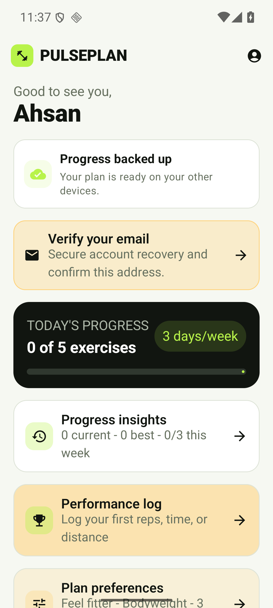
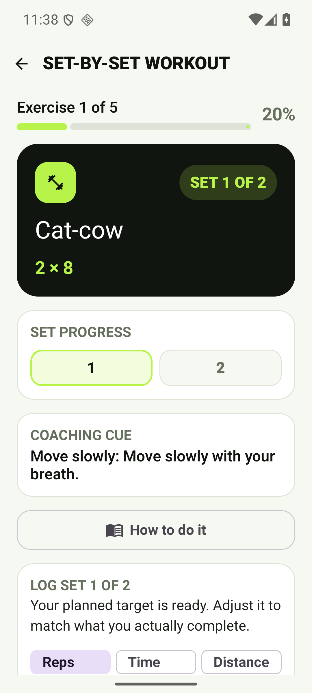
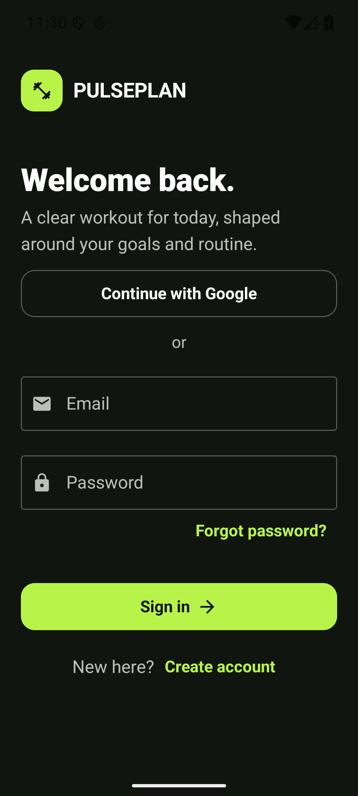
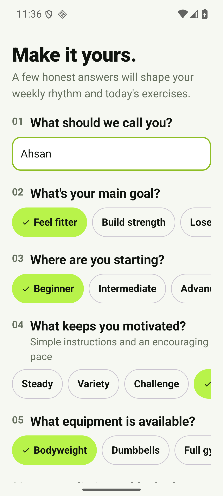
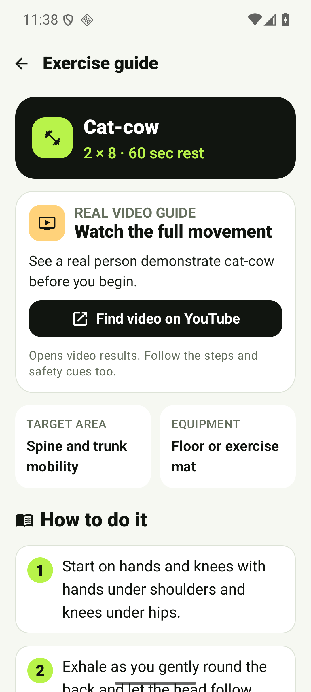
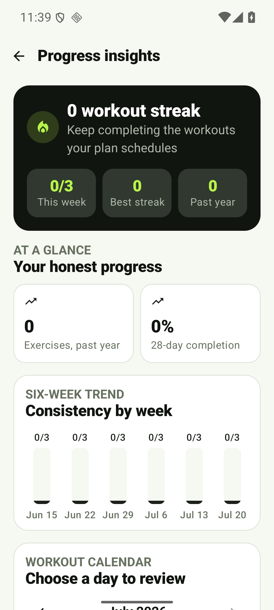
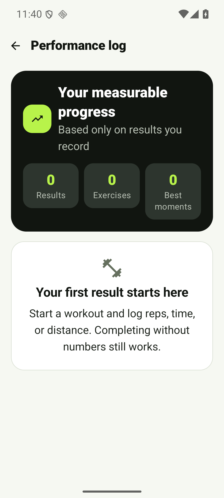

Make today's workout obvious.
The experience starts with honest onboarding and produces a repeatable plan without burying the user in setup or fitness jargon.
Kotlin · Jetpack Compose · Firebase
I build focused Android experiences around the main user journey, then verify the important parts: interface behavior, local data, cloud flows, privacy controls, and handoff.


I built PulsePlan as a personalized workout planner that turns a person's goals, experience, equipment, schedule, and movement preferences into a clear daily and weekly plan.
The experience starts with honest onboarding and produces a repeatable plan without burying the user in setup or fitness jargon.
Set-by-set tracking, rest controls, movement guides, swaps, and recovery-aware progress keep the app useful during a real session.
Firebase authentication, offline-first cloud sync, restoration, privacy information, and provider-aware account deletion are working and verified.
These screens come from the current v0.19.0 build, not a design mockup.





I am best suited to Android prototypes and early product versions where the main journey matters more than a long feature list.
A focused set of polished screens, navigation, the main user journey, and realistic local or sample data.
Authentication, cloud-backed records, restoration, privacy controls, and account deletion when the product needs them.
Clearer onboarding, state handling, accessibility improvements, testing, and documentation for an existing Kotlin app.
5–8 polished screens, one complete user journey, an installable test APK, source code, build verification, handoff notes, and one revision round.
Payments, complex admin systems, advanced backends, and Play Store release work are scoped separately.I keep the first version narrow enough to finish and useful enough to test with real people.
Define the user, main problem, must-have flow, and what is outside the first version.
Build the key screens and decisions into a working Android journey.
Check behavior, edge cases, builds, accessibility, and the agreed cloud or local flows.
Deliver the test build, source, clear notes, and a practical next-step list.
Tell me who the app is for, what they need to accomplish, and which feature matters most. I will help turn that into a focused first version.